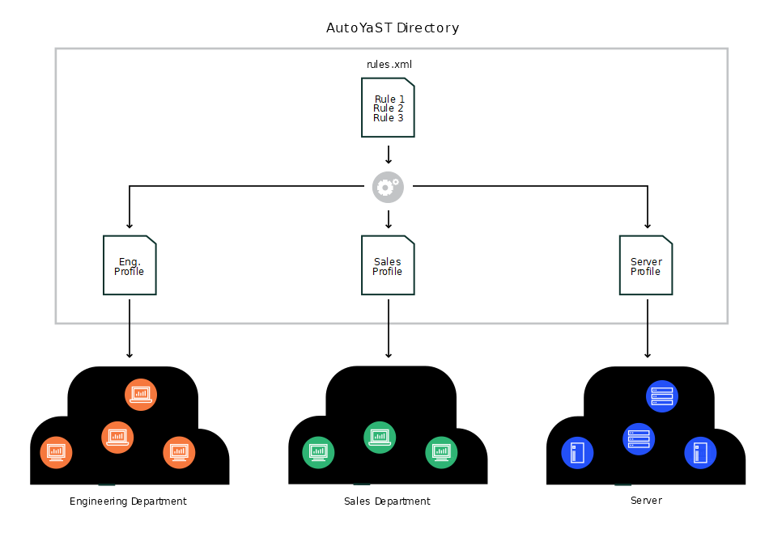

Chapter 6. Rules and classes
Rules and classes allow customizing installations for sets of machines in different ways:
-
Rules allow configuring a system depending on its attributes.
-
Classes represent configurations for groups of target systems. Classes can be assigned to systems.
autoyast boot option onlyRules and classes are only supported by the boot parameter autoyast=URL.
autoyast2=URL is not supported, because this option downloads a single AutoYaST control file only.
6.1. Rule-based automatic installation
Rules offer the possibility to configure a system depending on system attributes by merging multiple control files during installation. The rule-based installation is controlled by a rules file.
For example, this could be useful to install systems in two departments in one go. Assume a scenario where machines in department A need to be installed as office desktops, whereas machines in department B need to be installed as developer workstations. You would create a rules file with two different rules. For each rule, you could use different system parameters to distinguish the installations from one another. Each rule would also contain a link to an appropriate profile for each department.
The rules file is an XML file containing rules for each group of systems (or single systems) that you want to automatically install. A set of rules distinguish a group of systems based on one or more system attributes. After passing all rules, each group of systems is linked to a control file. Both the rules file and the control files must be located in a pre-defined and accessible location.
The rules file is retrieved only if no specific control file is supplied using the
autoyast keyword. For example, if the following is used, the rules file will not be evaluated:
autoyast=http://10.10.0.1/profile/myprofile.xmlautoyast=http://10.10.0.1/profile/rules/rules.xml
Instead use:
autoyast=http://10.10.0.1/profile/which will load http://10.10.0.1/profile/rules/rules.xml (the slash at the end of the directory name is important).

If more than one rule applies, the final control file for each group is generated on the fly using a merge script. The merging process is based on the order of the rules and later rules override configuration data in earlier rules. Note that the names of the top sections in the merged XML files need to be in alphabetical order for the merge to succeed.
The use of a rules file is optional. If the rules file is not found, system installation proceeds in the standard way by using the supplied control file or by searching for the control file depending on the MAC or the IP address of the system.
6.1.1. Rules file explained
The following simple example illustrates how the rules file is used to retrieve the configuration for a client with known hardware.
<?xml version="1.0"?><!DOCTYPE autoinstall><autoinstall xmlns="http://www.suse.com/1.0/yast2ns" xmlns:config="http://www.suse.com/1.0/configns"><rules config:type="list"><rule><disksize><match>/dev/sdc 1000</match><match_type>greater</match_type></disksize><result><profile>department_a.xml</profile><continue config:type="boolean">false</continue></result></rule><rule><disksize><match>/dev/sda 1000</match><match_type>greater</match_type></disksize><result><profile>department_b.xml</profile><continue config:type="boolean">false</continue></result></rule></rules></autoinstall>
The last example defines two rules and provides a different control file for every
rule. The rule used in this case is disksize. After parsing the rules file, YaST attempts to match the target system with the
rules in the rules.xml file. A rule match occurs when the target system matches all system attributes defined
in the rule. When the system matches a rule, the respective resource is added to the
stack of control files AutoYaST will use to create the final control file. The continue property tells AutoYaST whether it should continue with other rules after a match
has been found.
If the first rule does not match, the next rule in the list is examined until a match is found.
Using the disksize attribute, you can provide different configurations for systems with hard disks of
different sizes. The first rule checks if the device /dev/sdc is available and if it is greater than 1 GB in size using the match property.
A rule must have at least one attribute to be matched. If you need to check more attributes, such as memory or architectures, you can add more attributes in the rule resource as shown in the next example.
The following example illustrates how the rules file is used to retrieve the configuration for a client with known hardware.
<?xml version="1.0"?><!DOCTYPE autoinstall><autoinstall xmlns="http://www.suse.com/1.0/yast2ns" xmlns:config="http://www.suse.com/1.0/configns"><rules config:type="list"><rule><disksize><match>/dev/sdc 1000</match><match_type>greater</match_type></disksize><memsize><match>1000</match><match_type>greater</match_type></memsize><result><profile>department_a.xml</profile><continue config:type="boolean">false</continue></result></rule><rule><disksize><match>/dev/sda 1000</match><match_type>greater</match_type></disksize><memsize><match>256</match><match_type>greater</match_type></memsize><result><profile>department_b.xml</profile><continue config:type="boolean">false</continue></result></rule></rules></autoinstall>
The rules directory must be located in the same directory specified via the autoyast keyword at boot time. If the client was booted using autoyast=http://10.10.0.1/profiles/, AutoYaST will search for the rules file at http://10.10.0.1/profiles/rules/rules.xml.
6.1.2. Custom rules
If the attributes AutoYaST provides for rules are not enough for your purposes, use custom rules. Custom rules contain a shell script. The output of the script (STDOUT, STDERR is ignored) can be evaluated.
Here is an example for the use of custom rules:
<rule><custom1><script>if grep -i intel /proc/cpuinfo > /dev/null; thenecho -n "intel"elseecho -n "non_intel"fi;</script><match>*</match><match_type>exact</match_type></custom1><result><profile>@custom1@.xml</profile><continue config:type="boolean">true</continue></result></rule>
The script in this rule can echo either intel or non_intel to STDOUT (the output of the grep command must be directed to /dev/null in this case).
The output of the rule script will be filled between the two '@' characters, to determine
the file name of the control file to fetch. AutoYaST will read the output and fetch
a file with the name intel.xml or non_intel.xml. This file can contain the AutoYaST profile part for the software selection; for
example, in case you want a different software selection on Intel hardware than on
others.
The number of custom rules is limited to five. So you can use custom1 to custom5.
6.1.3. Match types for rules
You can use five different match_types:
-
exact(default) -
greater -
lower -
range -
regex(a simple=~operator like in Bash)
If using exact, the string must match exactly as specified. regex can be used to match substrings like ntel will match Intel, intel and intelligent. greater and lower can be used for memsize or totaldisk for example. They can match only with rules that return an integer value. A range
is only possible for integer values too and has the form of value1-value2, for example 512-1024.
6.1.4. Combine attributes
Multiple attributes can be combined via a logical operator. It is possible to let
a rule match if disksize is greater than 1GB or memsize is exactly 512MB.
You can do this with the operator element in the rules.xml file. and and or are possible operators, and being the default. Here is an example:
<rule><disksize><match>/dev/sda 1000</match><match_type>greater</match_type></disksize><memsize><match>256</match><match_type>greater</match_type></memsize><result><profile>machine2.xml</profile><continue config:type="boolean">false</continue></result><operator>or</operator></rule>
6.1.5. Rules file structure
The rules.xml file needs to:
-
have at least one rule,
-
have the name
rules.xml, -
be located in the directory
rulesin the profile repository, -
have at least one attribute to match in the rule.
6.1.6. Predefined system attributes
The following table lists the predefined system attributes you can match in the rules file.
If you are unsure about a value on your system, run /sbin/yast2 ayast_probe ncurses. The text box displaying the detected values can be scrolled. Note that this command
will not work while another YaST process that requires a lock (for example the installer)
is running. Therefore you cannot run it during the installation.
|
Attribute |
Values |
Description |
|---|---|---|
|
|
IP address of the host |
This attribute must always match exactly. |
|
|
The name of the host |
This attribute must always match exactly. |
|
|
Domain name of host |
This attribute must always match exactly. |
|
|
The name of the product to be installed. |
This attribute must always match exactly. |
|
|
The version of the product to be installed. |
This attribute must always match exactly. |
|
|
network address of host |
This attribute must always match exactly. |
|
|
MAC address of host |
This attribute must always match exactly (the MAC addresses should have the form |
|
|
Number of installed Linux partitions on the system |
This attribute can be 0 or more. |
|
|
Number of installed non-Linux partitions on the system |
This attribute can be 0 or more. |
|
|
X Server needed for graphic adapter |
This attribute must always match exactly. |
|
|
Memory available on host in megabytes |
All match types are available. |
|
|
Total disk space available on host in megabytes |
All match types are available. |
|
|
Hex representation of the IP address |
Exact match required |
|
|
Architecture of host |
Exact match required |
|
|
Kernel Architecture of host (for example SMP kernel, Xen kernel) |
Exact match required |
|
|
Drive device and size in megabytes |
All match types are available. |
|
|
The hardware product name as specified in SMBIOS |
Exact match required |
|
|
The hardware vendor as specified in SMBIOS |
Exact match required |
|
|
The system board name as specified in SMBIOS |
Exact match required |
|
|
The system board vendor as specified in SMBIOS |
Exact match required |
|
|
Custom rules using shell scripts |
All match types are available. |
6.1.7. Rules with dialogs
You can use dialog pop-ups with check boxes to select rules you want matched.
The elements listed below must be placed within the following XML structure in the
rules.xml file:
<rules config:type="list"><rule><dialog>...</dialog></rule></rules>
-
dialog_nr -
All rules with the same
dialog_nrare presented in the same pop-up dialog. The samedialog_nrcan appear in multiple rules.<dialog_nr config:type="integer">3</dialog_nr>This element is optional and the default for a missing dialog_nr is always
0. To use one pop-up for all rules, you do not need to specify thedialog_nr. -
element -
Specify a unique ID. Even if you have more than one dialog, you must not use the same id twice. Using id
1on dialog 1 and id1on dialog 2 is not supported. (This behavior is contrary to theaskdialog, where you can have the same ID for multiple dialogs.)<element config:type="integer">3</element>Optional. If omitted, AutoYaST adds its own IDs internally. Then you cannot specify conflicting rules (see below).
-
title -
Caption of the pop-up dialog
<title>Desktop Selection</title>Optional
-
question -
Question shown in the pop-up behind the check box.
<question>GNOME Desktop</question>Optional. If you do not configure a text here, the name of the XML file that is triggered by this rule will be shown instead.
-
timeout -
Timeout in seconds after which the dialog will automatically
press
the okay button. Useful for a non-blocking installation in combination with rules dialogs.<timeout config:type="integer">30</timeout>Optional. A missing timeout will stop the installation process until the dialog is confirmed by the user.
-
conflicts -
A list of element ids (rules) that conflict with this rule. If this rule matches or is selected by the user, all conflicting rules are deselected and disabled in the pop-up. Take care that you do not create deadlocks.
<conflicts config:type="list"><element config:type="integer">1</element><element config:type="integer">5</element>...</conflicts>Optional
Here is an example of how to use dialogs with rules:
<rules config:type="list"><rule><custom1><script>echo -n 100</script><match>100</match><match_type>exact</match_type></custom1><result><profile>rules/gnome.xml</profile><continue config:type="boolean">true</continue></result><dialog><element config:type="integer">0</element><question>GNOME Desktop</question><title>Desktop Selection</title><conflicts config:type="list"><element config:type="integer">1</element></conflicts><dialog_nr config:type="integer">0</dialog_nr></dialog></rule><rule><custom1><script>echo -n 100</script><match>101</match><match_type>exact</match_type></custom1><result><profile>rules/gnome.xml</profile><continue config:type="boolean">true</continue></result><dialog><element config:type="integer">1</element><dialog_nr config:type="integer">0</dialog_nr><question>Gnome Desktop</question><conflicts config:type="list"><element config:type="integer">0</element></conflicts></dialog></rule><rule><custom1><script>echo -n 100</script><match>100</match><match_type>exact</match_type></custom1><result><profile>rules/all_the_rest.xml</profile><continue config:type="boolean">false</continue></result></rule></rules>